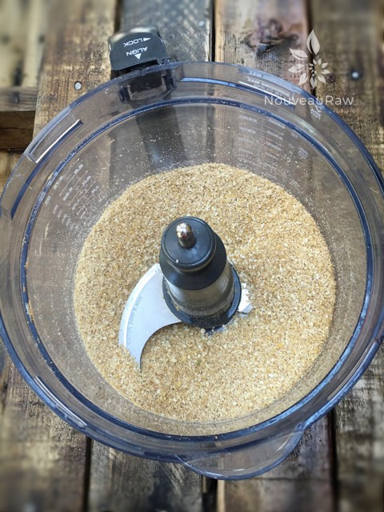
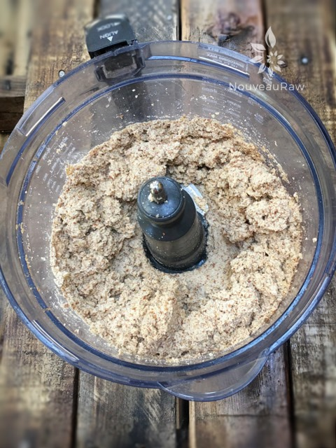
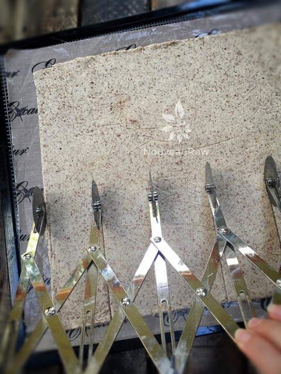
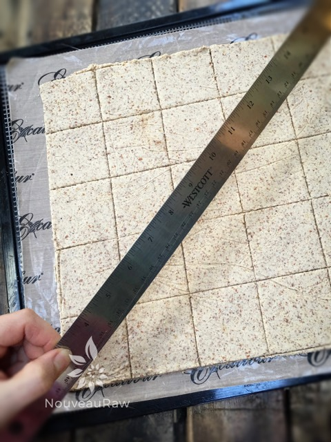
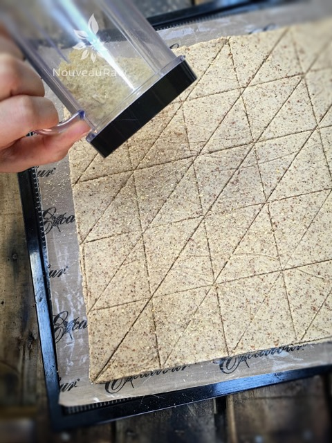
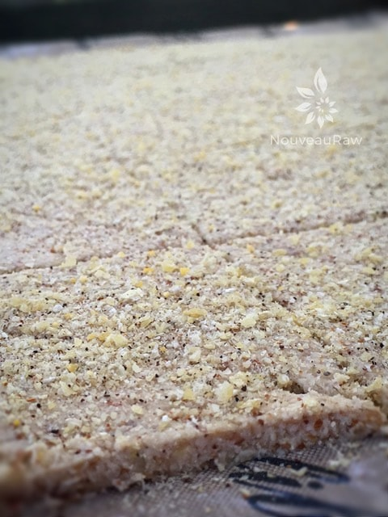

Chili Corn Crackers

~ raw, vegan, gluten-free ~
My love for corn chips and crackers, sort of morphed into one with this recipe. These crackers have a hearty corn flavor with a lingering chili spice that leaves you wanting more. I made them with almond pulp which made the cracker strong, crunchy and airy. How is that for a description?!
Recipe Inspiration
The inspiration for recipes can hit me at any time. It never takes the time or place into consideration. And when it hits me, I listen… I stop and write.
You can find oodles of recipes written on napkins, old receipts in my purse, on my computer… I even once wrote a recipe out on the back of a prescription that I had to get filled. DOH!!! I lost that recipe. lol
Anyway, this recipe hit me while I was slooooowly perusing the aisles of Hobby Lobby. :) Looking high, looking low, my eyes fell upon some plastic corn in the Spring section. That is all it took. I knelt down, found a scrap of paper in my purse and starting jotting down a recipe. It went something like below…
Ingredients:
Yields 128 crackers
- 6 cups packed, moist almond pulp
- 2 cups water
- 2 Tbsp maple syrup
- 2 Tbsp lemon juice (1 lemon)
Shaker topping:
- 1/2 cup chili corn nibblers
- 1 Tbsp nutritional yeast
- 1/4 tsp Himalayan pink salt
- 1/4 – 1/2 tsp chili powder
- In the food processor, fitted with the”S” blade, combine the almonds, 1 cup dried corn, ground flax, chili powder, salt and cayenne powder. Process until the almonds are broken down to a small crumble.
- Remove the lid and add the almond pulp, water, maple syrup and lemon juice. Blend well.
- Divide the batter into 4 sections, placing one section per dehydrator try. My trays are 14 x14″ so adjust according to your machine.
- Roll the batter out on the teflex sheet that comes with the dehydrator about 1/8 – 1/4″ thick.
- Square up the edges nice and straight, then score the crackers into triangle shapes.
- I used a long metal ruler to score the crackers.
- You can use a pizza cutter or knife, just be careful that you don’t cut the teflex sheet.
- In a grinder such as The Bullet, powder the 1/2 cup of chili corn nibblers, nutritional yeast, salt, and chili powder together.
- Shake on top of the chips/crackers.
- Dehydrate at 145 degrees (F) for 1 hour, then reduce to 115 degrees for 6-8 hours, flip them onto the mesh sheet and peel the teflex sheet off. Continue drying for another 6-8 hours or until dry.
- Once cool, snap the crackers and apart and store in an airtight container for 2 weeks.
Culinary Explanations:
- Why do I start the dehydrator at 145 degrees (F)? Click (here) to learn the reason behind this.
- When working with fresh ingredients it is important to taste test as you build a recipe. Learn why (here).
- Don’t own a dehydrator? Learn how to use your oven (here). I do however truly believe that it is a worthwhile investment. Click (here) to learn what I use.

Here is a photo showing you the texture of the nuts, etc. that I created.

After adding the wet ingredients and blending it together, this is what it ought to look like.

Roll out flat and score into the cracker size that you want. I have made them both at 1/4 and 1/8th” and prefer the thinner one. But it’s up to you.

You can also use a metal ruler to score the crackers. Or even perhaps a pizza cutter.

Sprinkle on the topping and slide the tray into the dehydrator.

I always get requests for pictures that show the side view. I did my best. :)
© AmieSue.com